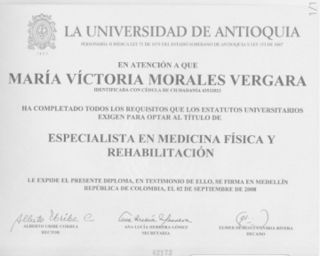

¡Hola! Soy la Dra. Maria Victoria Morales, médica especialista en Fisiatría, dedicada a mejorar tu calidad de vida a través de un enfoque integral en el manejo del dolor y las disfunciones musculoesqueléticas. Mi consulta se basa en un diagnóstico clínico y funcional, ofreciendo una propuesta de tratamiento personalizada para la mejoría de lesiones, la adaptación en situaciones de discapacidad y la optimización de tu bienestar. Mi compromiso es ofrecerte un tratamiento integral y personalizado que te permita recuperar tu funcionalidad y disfrutar de una vida plena y activa. Si buscas un enfoque médico especializado en el manejo del dolor y la mejora de tu calidad de vida, estoy aquí para acompañarte en tu proceso de recuperación.
